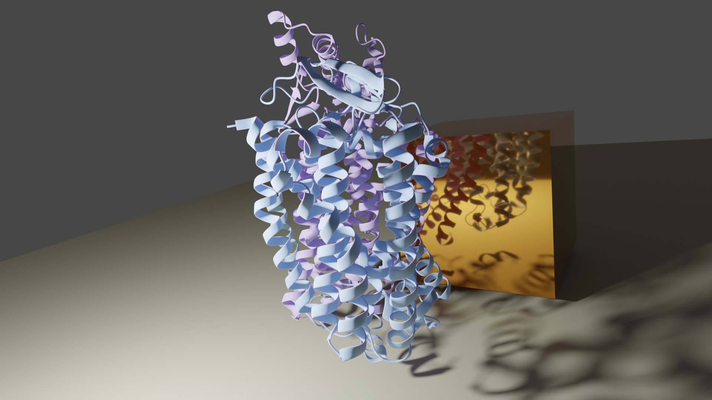
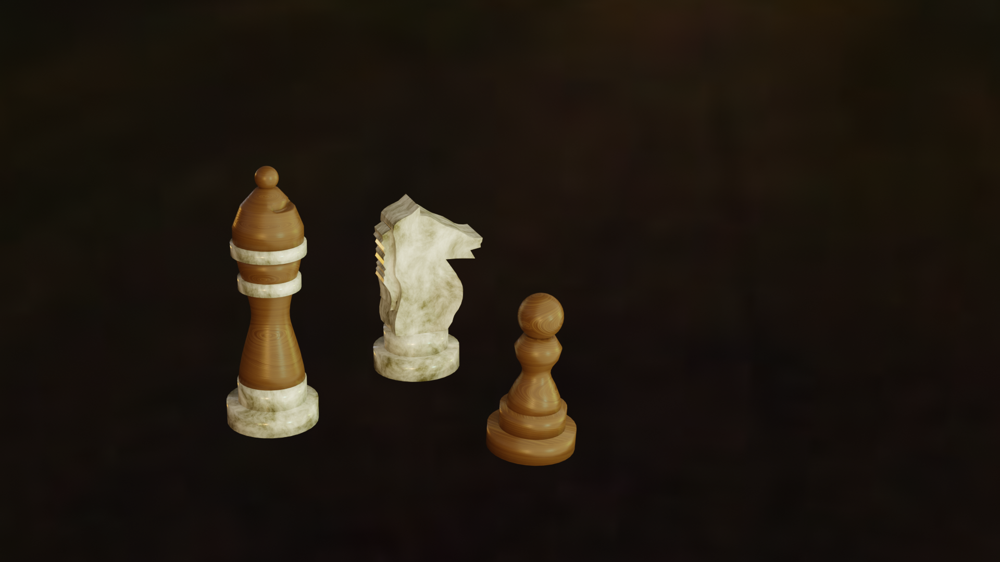
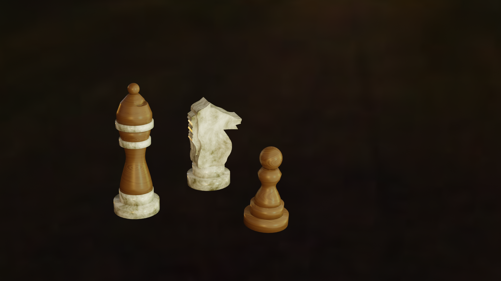

Blender Animations
I’ve been experimenting with Blender over the past year or two. Here are some things I’ve created.
More details to come!
A Donut
As is tradition in the Blender community, one of the first things I made was a donut.
Biomolecules
These projects are a bit more useful for my professional life than modelling a donut.
I started by working through the Blender for Biochemists video series by Brady Johnston.
With a basic understanding of Blender and my experience from my Bachelor's thesis in Hartmut Michel's group, I grasped these concepts rather quickly.
Having a good understanding of structural biology and the conventions and software used to visualize biomolecules definitely helped with the projects here!

To add: Animation of the bd II oxidase in membrane, 3d printed bd oxidase
Chess
I made chess figures, experimenting with different appearances and textures. The examples below showcase figures made from polished marble, neon mesh, and futuristic shiny textures.

 

I also worked on creating a board for the set and plan to code a playable chess game at some point. Time will tell when I can make this happen!
To Be Updated
While playing Dungeons and Dragons, I tried modeling my character for 3D printing. I’ll share updates soon on how my monk turned out and the lessons I learned along the way. Stay tuned!